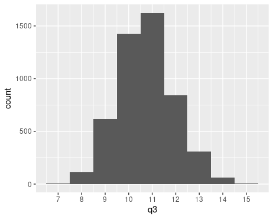
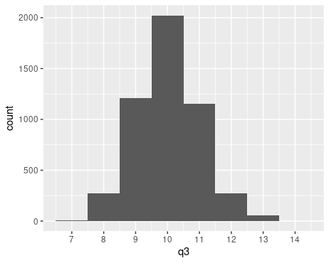
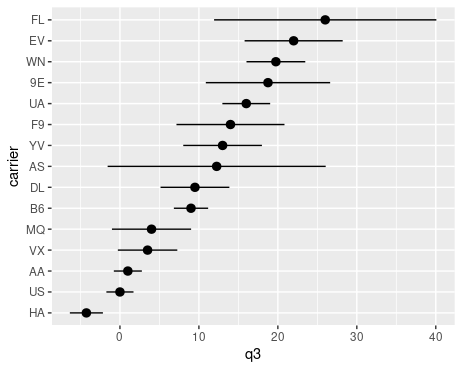

Introduction to Bootstrapping
Overview
Let us say loosely that an aggregation function is a
function which takes as input some data and outputs a single number. For
example, the function which takes as input data from a single numerical
variable and outputs the mean (or median, or 25th percentile, or 53rd
percentile, or standard deviation) is an aggregation function. The
function which takes as input data from a single binary variable and
outputs the percentage of TRUE values is also an
aggregation function. We can also have aggregation functions which take
as input data from multiple variables. For example, you might be
interested in the function which takes as input data from two numerical
variables, and outputs the slope of the least squares regression line.
As is probably clear, almost anything can be considered an aggregation
function.1
Suppose I fix an aggregation function. If I were able to evaluate the aggregation function on data from the entire population, the output would be called a population parameter. Of course, in many situations of interest, we do not have population data. Instead, we merely have data from a random sample. The output of the aggregation function on this data from a random sample is called a sample statistic (sometimes also called a point estimate).
When we calculate a sample statistic, it’s often a good idea to try to understand how “uncertain” we should be about its value. How far might the value of the population parameter be? How different might the sample statistic have been if we had chosen a different random sample?
These questions can be formalized precisely using mathematics. There is probability space which lists off all of the possible random samples of a given size. The aggregation function can then be regarded as a random variable on this probability space. The “uncertainty of the sample statistic” is then formalized by asking: what is the distribution of this random variable? This distribution is called the sampling distribution of the statistic.
We can sometimes derive what the sampling distribution looks like on the nose, but only in somewhat special situations. Bootstrapping is a widely applicable strategy for approximating the sampling distribution of a test statistic, no matter what aggregation function we might be interested in.
The idea is that we repeatedly resample with replacement from our random sample, evaluate the aggregation function from each of those resamples, and build a distribution of the outputs. The result of this process is called the bootstrap distribution.
Difficult mathematics guarantees that, for almost any aggregation function and almost any population distribution, the bootstrap distribution you get from your sample will be a good stand-in for the sampling distribution (at least as long as your sample was “large enough,” where the precise definition of “large enough” depends on what aggregation function you’re dealing with). Thankfully, while it may be difficult to prove this, it’s not at all difficult to apply this idea in practice!
Extended Example
Introduction
Suppose I’m interested in the 75th percentile (ie, third quartile) of departure delays of flights out of NYC, and that I collect a random sample of data from 2000 flights to figure out what the 75th percentile might be.
Let me simulate this by taking a random sample of 2000 flights from
the nycflights13::flights data set.
library(tidyverse)
library(nycflights13)
sample_size = 2000
sample <- flights %>% slice_sample(n = sample_size)I’m now going to forget about the flights tibble and
pretend like sample is the only data I have access to
(except for a brief interlude below). The R function
quantile is useful for calculating percentiles. The
following outputs the 75th percentile of the dep_delay
column of samples:
quantile(sample$dep_delay, prob = 0.75, names = FALSE, na.rm = TRUE)For me, this outputs 10, but you might get something else since your random sample will be different. This means that 75% of flights in my sample have a departure delay of less than 10 minutes from their scheduled departure time.
Since the call to quantile(...) above involves a lot of
typing, let’s save ourselves some typing by defining a new function,
called q3, which does the same thing:
q3 <- function(x) {
quantile(x, prob = 0.75, na.rm = TRUE, names = FALSE)
}Running q3(sample$dep_delay) still outputs 10 (for me),
as it should! It’s still the same sample, after all. Check that you
still get the same output.
The function q3 is the relevant aggregation function in
this extended example. When you bootstrap in other settings, you’ll have
to swap out q3 for whatever other aggregation function you
might be interested in.
Now I might want to understand how uncertain I ought to be about this 10 number that I calculated.
Interlude: Let’s Stop Pretending
For a moment, let’s stop pretending that we don’t have access to the
full flights data set. I can use this full data set to
calculate the true 75th percentile (ie, the population parameter):
q3(flights$dep_delay)It turns out to be 11, so the statistic I calculated from my sample wasn’t too far off.
I can also calculate the true sampling distribution by repeatedly sampling from the full data set. Here’s how to do this. (Don’t worry too much about how this piece of code works right now. We’ll discuss the important parts below, and then if you like, you can come back to this code and figure out what it’s doing.)
library(modelr)
repetitions = 5000
index_lists <- map(seq(repetitions), ~ sample(seq(nrow(flights)), sample_size))
samples <- map(index_lists, ~ resample(flights, .))
samples <- tibble(sample = samples, .id = seq(repetitions)) %>%
mutate(q3 = map_dbl(sample, ~ q3(as_tibble(.)$dep_delay)))
samples %>%
ggplot(aes(q3)) +
geom_histogram(binwidth = 1) +
scale_x_continuous(breaks = 5:16)The output shows us roughly what the true sampling distribution looks like.

This gives us some indication for how uncertain to be about our statistic. It shows us, for example, that, though 11 is the most common 75th percentile that one might obtain from a random sample of size 2000, a sample whose 75th percentile is 10 (like the sample that I got) is not so uncommon.
When the sampling distribution is roughly symmetric and centered about the true population parameter (as it is above), the aggregation function is said to be “unbiased.” There are various ways of making this a precise mathematical definition which aren’t worth dwelling on here, but most aggregation functions that one uses in practice are unbiased according to at least one of these definitions of unbiased. It’s possible to deal with biased aggregation functions, but things get a little more complicated.
Let’s now go back to pretending that we don’t have access to the
flights data set. In real life, we won’t often have access
to population data (and even if we do, constructing a sampling
distribution from the population data would be a somewhat academic
exercise). There’s now know way of knowing that the parameter value is
actually 11, or of knowing what the sampling distribution looks like, or
of knowing the standard error.
But we can calculate the bootstrap distribution, which is an
approximation for the sampling distribution. To do this, we’ll
repeatedly take resamples of size 2000 with replacement from
sample, and then compute the 75th percentile of each of
those resamples. Note that it’s important that the resamples are chosen
with replacement. If we were to choose a sample of size 2000
from sample without replacement, the result will
always just be all of sample, since sample has
2000 elements!
Resamples
The modelr package provides some useful tools for
resampling. It’s a tidyverse package, but isn’t loaded in
by default with the library(tidyverse) command, so you
should load it in now. (You might already have done this if you copied
the previous chunk of code into the console, but there’s no harm in
doing it again.)
library(modelr)To understand resamples, let’s take a single resample with
replacement from sample of the same size as
sample. The function resample_bootstrap does
exactly this:
resample <- resample_bootstrap(sample)This generates an object of type “resample,” which is sort of like a
tibble — except it’s not. To save space in memory, it’s actually just a
list of pointers to rows in sample. To turn it into an
actual tibble, you have to use the function as_tibble:
as_tibble(resample)Now if I want to compute the 75th percentile of departure delays from this resample, I’d can do this:
q3(as_tibble(resample)$dep_delay)Or, if you’re really into pipes, you could equivalently do this:
resample %>%
as_tibble() %>%
pull(dep_delay) %>%
q3()Bootstrapping
To bootstrap, we’re going to take 5000 resamples. Note that the number 5000 is arbitrary; feel free to choose any big number when you’re bootstrapping. The bigger the better, but of course computations will get slower with bigger numbers.
The bootstrap function from modelr
repeatedly performs resample_bootstrap, as many times as
you specify, and stores the results of each resample in a row in a
tibble.
library(modelr)
repetitions <- 5000
resamples <- bootstrap(sample, repetitions)The result of this is a tibble named resamples with 5000
rows, each corresponding to one resample. There are two columns: one
named strap which contains the actual resample
object, and one named .id which assigns a number to each
resample.
We’re now going to add a column named q3 to
resamples. This column will record the 75th percentiles of
all of the resamples.
resamples <- resamples %>%
mutate(q3 = map_dbl(strap, ~ q3(as_tibble(.)$dep_delay)))What’s going on here? The function map_dbl takes as
input a list and outputs a list of dbls (ie, decimal
numbers). The list it takes as input is specified by the first argument
to map_dbl — in this case, the strap column of
resamples, which is a list of objects of type “resample.”
It then applies the function that follows the ~ to each
object in the input list, substituting that object in place of the
. that shows up in the expression. This gives us a list of
doubles (each double being the 75th percentile of departure delays of
each resample), and we assign that list of doubles to be a column named
q3 in the resamples tibble.
Note q3 is now both a function as well as a column in
resamples. Make sure you know which one is being talked
about whenever you type q3 from here on out.
You can now make a histogram of these 75th percentiles to see the bootstrap distribution.
resamples %>%
ggplot(aes(q3)) +
geom_histogram(binwidth = 1) +
scale_x_continuous(breaks = 5:16)You should now see a distribution that isn’t too different
from the sampling distribution that we made during the interlude, but
instead of being centered around 11, it’ll probably be centered around
whatever you got for q3(sample$dep_delay). Here’s what I
see:

Standard Error
Once you have a bootstrap distribution, you can extract quantitative measures of uncertainty from it. The easiest of these is the standard error.
By definition, standard error is the standard deviation of the sampling distribution. We don’t know what the sampling distribution is (or rather, we’re pretending we don’t…), so a good stand-in is the standard deviation of the bootstrap distribution. We can calculate this as follows:
sd(resamples$q3)I get 1.52, but you might get something a little different since your
sample and resamples will be different from
mine.
A loose way to interpret this 1.52 value is as specifying some kind of range around the statistic. It’s saying roughly that the it would not be too surprising if the true parameter value was within 1.52 units of the sample statistic that I obtained from my sample.
We saw during the interlude that the parameter value was 11 – which is in fact within 1.52 minutes of my sample statistic. Is the parameter value within the range specified by the standard error of your sample statistic? (It might not be, and that’s okay.)
Required Exercise
Using your sample and your bootstrap
resamples, generate a plot like this:

The points in this plot mark off the 75th percentile of the departure delays of each carrier, and the lines extend from the 75th percentile minus the standard error to the 75th percentile plus the standard error. The carriers on the y-axis are sorted by the 75th percentile of their departure delays.
Note that, depending on the sample you’re working with,
your plot might look radically different from the one above: the
ordering of carriers could be very different, some carriers might have
huge standard errors, some carriers might just be points without
intervals, etc. Remember at the end of the introduction where we said
“if the same size is ‘large enough’”? The issue here is that a sample of
size 2000 is not really big enough for this particular calculation to be
stable. It’s big enough for the standard error calculation for the 75th
percentile of all flights to be relatively stable, but after
grouping into categories based on carrier, some of the groups have too
small a sample — especially the groups corresponding to carriers that
have very few flights represented in the flights data
set.
So, after you get your code working with your original
sample of size 2000, take a new larger sample
of size 20000 from flights. Filter out the carriers which
have very few observations. Build a bootstrap distribution using your
filtered sample, and then use this bootstrap to generate the same kind
of plot as the one above.
This exercise might be a little challenging. It may be helpful to
review the dplyr functions group_by and
summarize, and to browse the dplyr and
tidyr cheatsheets
for other helpful functions.
For the purposes of grading, we’ll pretend that this exercise belongs to [WNP21, Section 5.1] (which has no associated exercises). In other words, you should do this exercise as a part of assignment F.
Confidence Intervals
Another quantitative measure of uncertainty that can be extracted from a bootstrap distribution is a confidence interval. There are several different types of bootstrapped confidence intervals. Here, we just focus on one simple type.
The confidence interval of confidence level \(\gamma\) goes from the \(((1-\gamma)/2)\)th percentile of the
bootstrap distribution up to the \((1-(1-\gamma)/2)\)th percentile. For
example, if \(\gamma = 0.9\), we have
\((1-\gamma)/2 = 0.05\) and the 90%
confidence interval goes from the 5th to the 95th percentile of the
bootstrap distribution. Recall that the bootstrap distribution is stored
in resamples$q3, and we can use the quantile
function to calculate its percentiles. In fact, we can calculate both in
one go:
quantile(resamples$q3, probs = c(0.05,0.95), names = FALSE) For me, this outputs a 5th percentile of 8 and a 95th percentile of 12. I interpret this confidence interval by saying that I am 90% confident that the true 75th percentile of departure delays is between 8 and 12.
As I know from the interlude, the true value (ie, 11) is in fact in this range. Does your 90% confidence interval contain the true value? Even before you’ve done it, I know that there’s a 90% chance that it will. (If it doesn’t, that’s okay! After all, there is a 10% chance that it won’t.)
Optional Exercises
Here are some more exercises that you might choose to do as a part of assignment F to get to the 10 problem total.
Calculate 80%, 95%, and 99% confidence intervals for the 75th percentile of departure delays from your bootstrap distribution.
Change the plot from the required exercise so that the lines display 90% confidence intervals (instead of the standard error). In other words, the line segments should stretch from the lower endpoint of the 90% confidence interval to the upper endpoint.
Here’s how you’d use
geom_densityto display the bootstrap distribution:resamples %>% ggplot(aes(q3)) + geom_density()You’ll probably notice something strange when you do this. Try replacing
geom_density()withgeom_density(adjust = 1/2)orgeom_density(adjust = 2)orgeom_density(adjust = 4), and so forth, until you see something that looks reasonable. Once you’ve found something that seems reasonable, what are your opinions about usinggeom_densityinstead ofgeom_histogramto visualize the bootstrap distribution? Explain.Go back to the code in the interlude that generated the picture of the sampling distribution, and explain how it works.
Read this addendum about
rsample. Then explain what would need to change with the code from the interlude that generated the picture of the sampling distribution if you wanted to usersampleinstead ofmodelr.